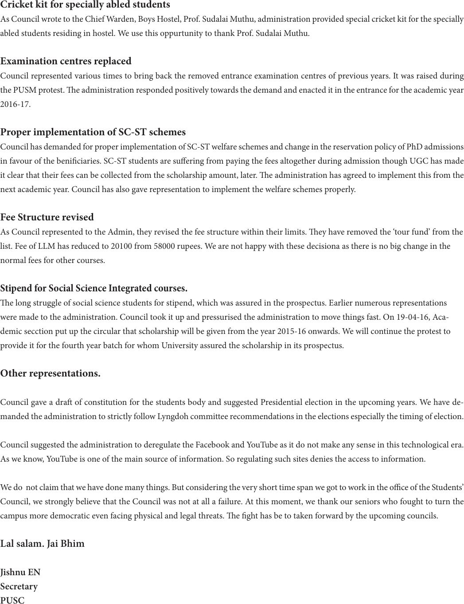

Cricket kit for specially abled students
As Council wrote to the Chief Warden, Boys Hostel, Prof. Sudalai Muthu, administration provided special cricket kit for the specially
abled students residing in hostel. We use this oppurtunity to thank Prof. Sudalai Muthu.
Examination centres replaced
Council represented various times to bring back the removed entrance examination centres of previous years. It was raised during
the PUSM protest. e administration responded positively towards the demand and enacted it in the entrance for the academic year
2016-17.
Proper implementation of SC-ST schemes
Council has demanded for proper implementation of SC-ST welfare schemes and change in the reservation policy of PhD admissions
in favour of the beniciaries. SC-ST students are suering from paying the fees altogether during admission though UGC has made
it clear that their fees can be collected from the scholarship amount, later. e administration has agreed to implement this from the
next academic year. Council has also gave representation to implement the welfare schemes properly.
Fee Structure revised
As Council represented to the Admin, they revised the fee structure within their limits. ey have removed the ‘tour fund’ from the
list. Fee of LLM has reduced to 20100 from 58000 rupees. We are not happy with these decisiona as there is no big change in the
normal fees for other courses.
Stipend for Social Science Integrated courses.
e long struggle of social science students for stipend, which was assured in the prospectus. Earlier numerous representations
were made to the administration. Council took it up and pressurised the administration to move things fast. On 19-04-16, Aca-
demic secction put up the circular that scholarship will be given from the year 2015-16 onwards. We will continue the protest to
provide it for the fourth year batch for whom University assured the scholarship in its prospectus.
Other representations.
Council gave a dra of constitution for the students body and suggested Presidential election in the upcoming years. We have de-
manded the administration to strictly follow Lyngdoh committee recommendations in the elections especially the timing of election.
Council suggested the administration to deregulate the Facebook and YouTube as it do not make any sense in this technological era.
As we know, YouTube is one of the main source of information. So regulating such sites denies the access to information.
We do not claim that we have done many things. But considering the very short time span we got to work in the oce of the Students’
Council, we strongly believe that the Council was not at all a failure. At this moment, we thank our seniors who fought to turn the
campus more democratic even facing physical and legal threats. e ght has be to taken forward by the upcoming councils.
Lal salam. Jai Bhim
Jishnu EN
Secretary
PUSC